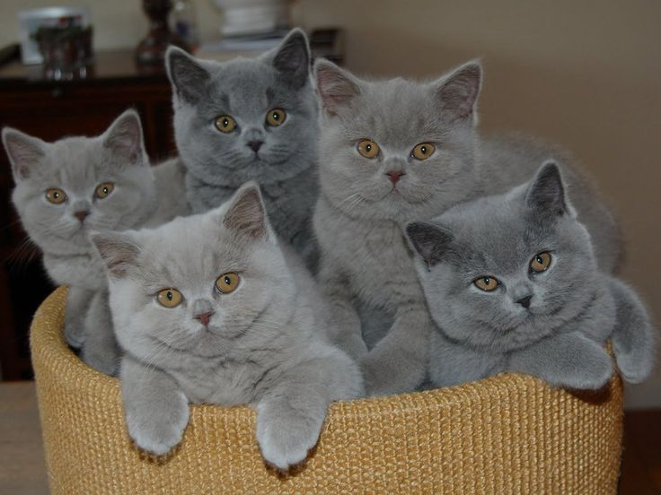
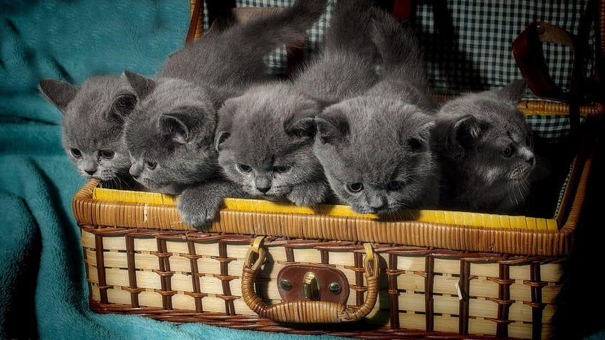

Sejarah

Kucing British Shorthair merupakan salah satu ras kucing tertua di dunia. Konon, kucing ini datang dari bangsa Romawi di abad pertama Masehi.
Berbeda dengan jenis kucing ras lainnya, British Shorthair memiliki bentuk tubuh yang unik.
Kucing ini mempunyai postur tubuh yang besar, pendek, dan berotot. Selain itu,
ciri khas British Shorthair yang tak kalah unik adalah bentuk bulu yang pendek namun tumbuh padat dan tebal.
Berbeda dengan kucing ras persia atau anggora yang mempunyai bulu panjang hingga menutupi kaki.
Keunikan inilah yang menjadi daya tarik tersendiri bagi para pecinta kucing. Tidak heran,
jika British Shorthair termasuk jenis kucing ras yang populer dan banyak dicari oleh pecinta kucing.
Ciri-ciri

Kucing British Shorthair (BSH) adalah salah satu ras kucing domestik yang berasal dari Inggris. Ini sama halnya dengan kucing kampung yang ada di Indonesia.
Kucing ini adalah salah satu ras kucing tertua dan dikenal karena ciri fisiknya yang khas, termasuk tubuh yang kokoh, bulu pendek yang tebal, dan kepala berbentuk bulat.
Kucing ini juga umumnya bisa menjadi teman yang baik dan cocok untuk pemilik yang mencari kucing dengan sifat yang lebih tenang. Berikut adalah ciri-ciri kucing BSH.
- Tubuh yang kokoh dan berotot
- Kepala bulat
- Telinga kecil dan tegak
- Mata besar dan bulat
- Hidung pendek dan lebar
- Leher pendek dan kekar
- Bulu pendek dan tebal
- Kaki pendek dan kokoh
- Ekor pendek dan tumpul
- Sifat yang tenang dan lengket
- Suara yang lembut
Perawatan
Ras British Shorthair termasuk jenis kucing berbulu pendek, tetapi padat, sehingga memerlukan jenis sisir tertentu untuk menyisir bulunya.
Anda bisa menggunakan sisir logam dengan gigi yang berjarak lebar atau jarang-jarang untuk menyisir bulunya seminggu sekali. Hal ini untuk membantu mengurangi kerontokan bulu.
Dalam hal membersihkan diri, kucing BSH umumnya mampu membersihkan dirinya sendiri, kecuali kucing yang sudah tua atau saat ada sesuatu berbahaya yang menempel pada bulunya.
Sementara itu, untuk merawat kukunya, Anda bisa memotong kuku kucing setiap 2 minggu sekali.
Jangan lupa juga untuk membersihkan telinga dan giginya secara teratur. Anda bisa menggunakan pasta gigi hewan yang telah disetujui oleh dokter hewan.
Selain perawatan tubuh, perhatikan juga kesehatan mental kucing. Misalnya, Anda bisa menggunakan tiang garukan yang tinggi untuk membantu naluri menggaruk alami kucing.